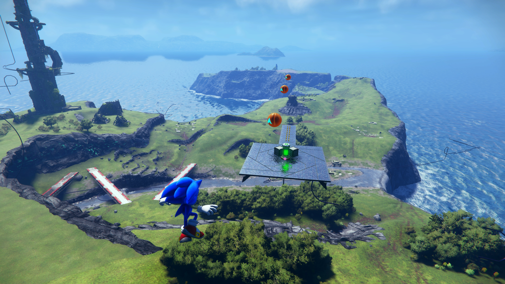
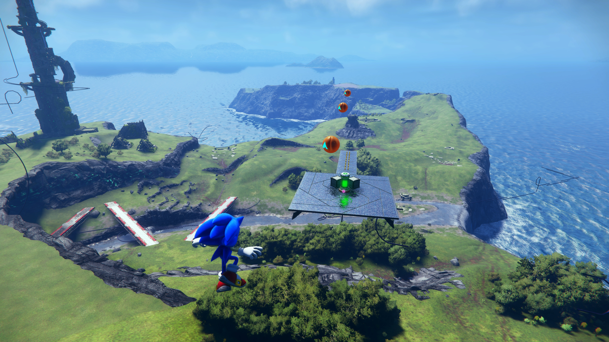
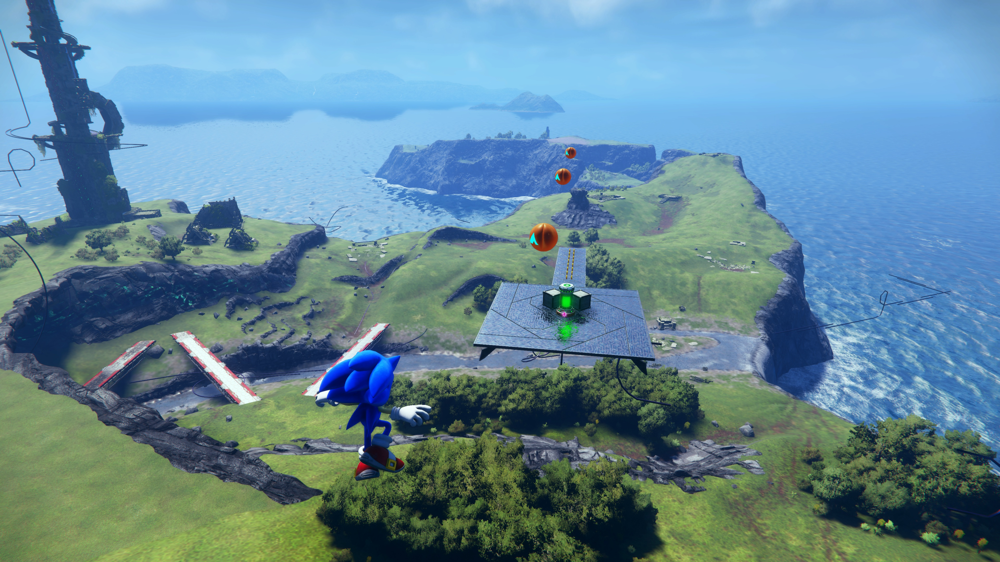
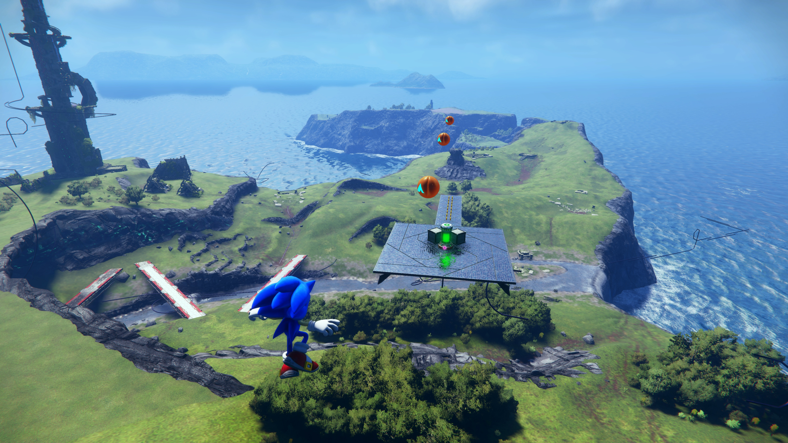
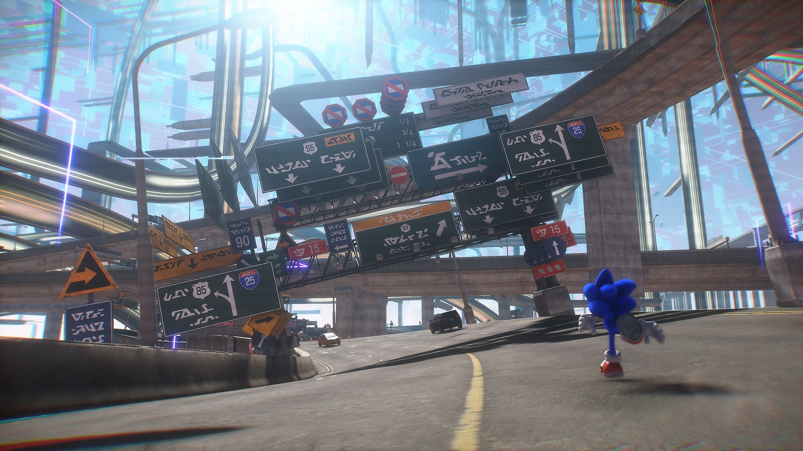

 

Sonic Frontiers is a 3D platformer and action-adventure game. The player, as Sonic, explores the Starfall Islands, which comprise various biomes including flowery fields, forests, ancient ruins, and deserts. Sonic retains his abilities from previous Sonic the Hedgehog games: he runs at high speeds, collects rings, grinds on rails, and homes in on enemies to attack. The player can double jump, sidestep using their gamepad's shoulder buttons, drop dash, and boost with the right trigger if they have enough energy. New abilities include combat attacks, running alongside walls, and using the Cyloop to create a circle of light around objects and interact with them. The player can customize the controls and adjust Sonic's speed, turning, acceleration, and resistance, and can upgrade Sonic's speed, attacks, defense, and ring capacity as they progress.
